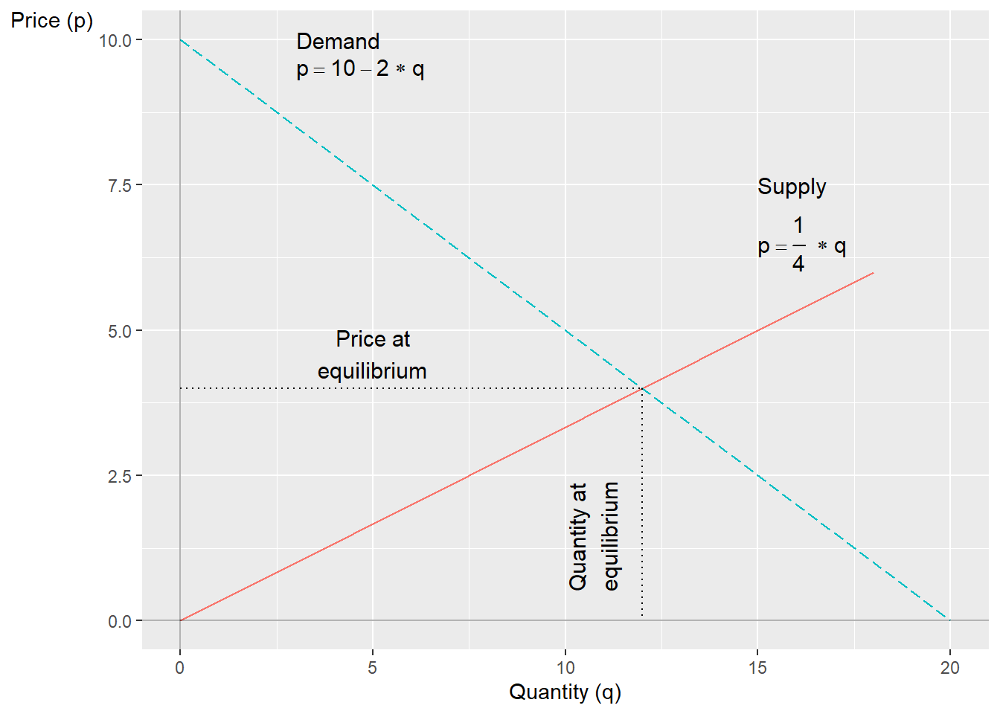
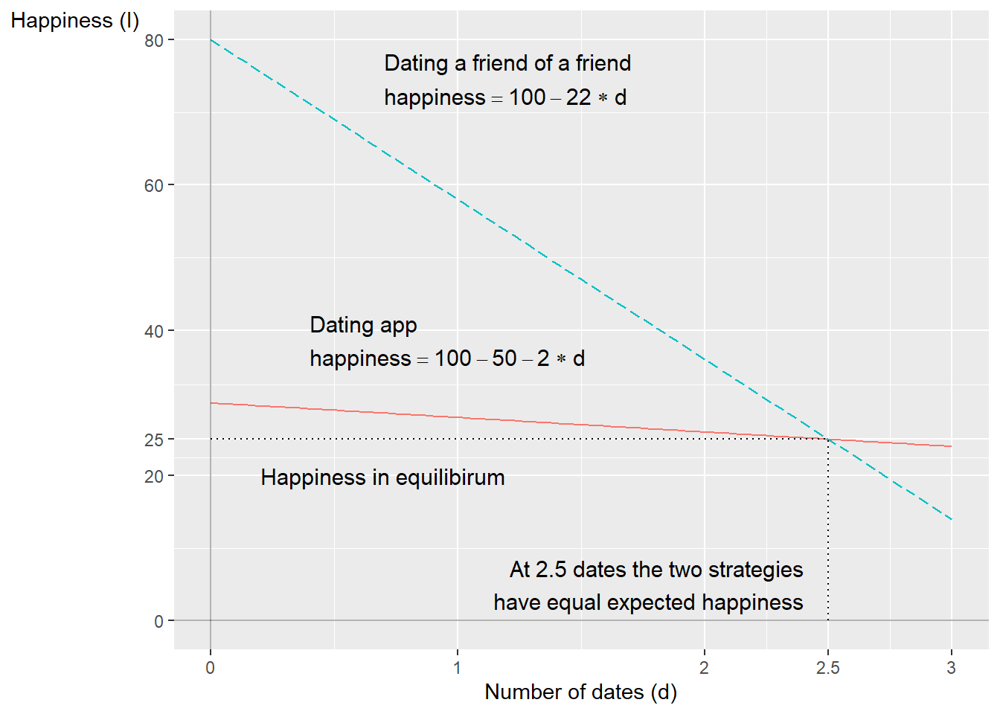
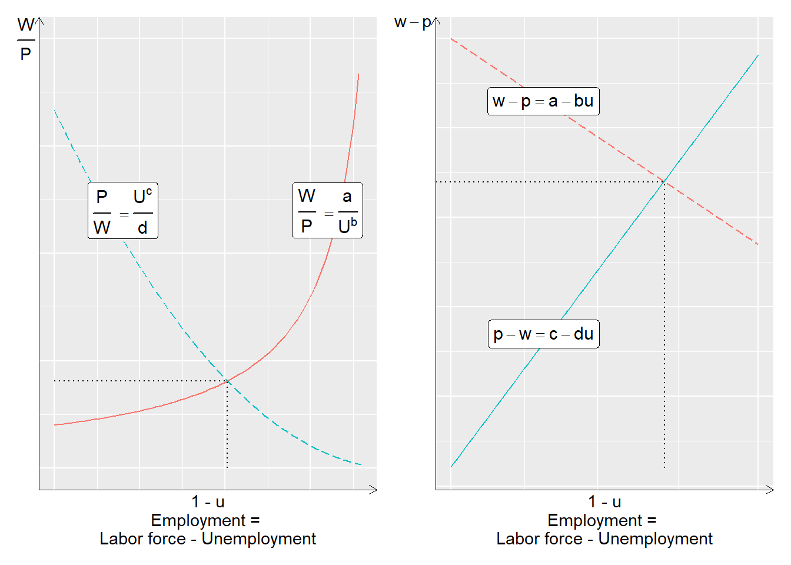

Chapter 8 Theories of life, death and dating
In this chapter we will go through how we can use mathematics to describe social science theories. The examples are greatly simplified and intended only as illustration. In this part of the work we are only superficially interested in reality. Later on, in Part II and III , we will go through how we can use mathematics to more carefully compare our theories against information about reality.
8.1 Income and life expectancy
Suppose we have a theory that higher income extends life for people. We describe our theory in the following way:
\[ \begin{equation} Y=a*X \end{equation} \]
where \(Y\) is the number of years a person lives, \(X\) is the number of USD the person has in income during their adult life and a is a coefficient that describes in what way \(X\) affects \(Y\). On an overall level it seems reasonable that people with higher incomes live longer. Many people with higher incomes have better opportunity to choose healthy alternatives, greater opportunities to rest and so on. But our model feels a bit too simple so we could think about whether we can improve it.
As our model is written right now the relationship is linear, for each USD of higher income life is extended by a. But that might not be so credible. The large effect of higher income might arise primarily at low incomes, for example when going from 0 USD to a small income. In that case we now have a theory that income \(X\) has a diminishing effect on life expectancy \(Y\). One way to describe this mathematically is the following:
\[ \begin{equation} Y=X^{b},\,0<b<1 \end{equation} \]
The exponent \(b\) is between 0 and 1. Exactly what value \(b\) has we are a bit uncertain about. We might plan to study it by collecting data on people’s life expectancy and incomes, but not right now. For our theoretical discussion this information is sufficient as it is now.
That a single variable, income, could give a complete explanation to such a complex phenomenon as life expectancy also doesn’t seem so credible. Let us therefore also add a variable that summarizes all hereditary biological conditions, for example risks for certain diseases. We call this new variable \(G\). Our theoretical model now becomes:
\[ \begin{equation} Y=X^{b}+G,\,0<b<1 \end{equation} \]
Our theoretical model is still very limited and if we wish we could add more variables. There are no mathematical limitations for what we add. What should be included in the model simply depends on what we are going to use the mathematics for.
8.2 Mathematical adventures in national income
We have earlier compared data on GDP. Alongside reality we can also describe GDP theoretically, for example like this:
\[ \begin{equation} Y=C+G+I+X-M \end{equation} \]
where \(Y\) is GDP, \(C\) is private households’ consumption of goods and services, \(G\) is public sector consumption, I is investments in machines and factories, \(X\) is export of goods and services and M is import. This is a common way to describe GDP and you can find real data on these parts online. But here we only discuss these things as abstract concepts.
Theoretically there is nothing that prevents us from adding more letters. Say for example that we want to distinguish investments I into two parts: investments in manufacturing industries that create things and investments in service industries that create services. We call these two components \(I_{t}\) and \(I_{s}\).
We also want to distinguish household consumption with a variable for rich households and a variable for poor households. We call these variables \(C_{\text{rich}}\) and \(C_{\text{poor}}\). We need not define precisely where to draw the line for rich and poor respectively. We now get the following definition:
\[ \begin{equation} Y=C_{\text{rich}}+C_{\text{poor}}+I_{t}+I_{s}+X-M \end{equation} \]
We can continue to build on our description if we feel like it. We might for example also want to add letters that symbolize natural resources and divide this into more or less environmentally harmful production. We might want to have a measure of export and import that occurs in contact with certain types of countries.
But now we are mostly adding things because we can. What should be included in the equation depends primarily on what the purpose is, what we are going to use the mathematics for and what we want to discuss or illustrate. We can for example use such an equation to show how different things in the economy affect each other or how important they are for our economic prosperity.
8.3 A matter of class
A large amount of social science is interested in how the population can be categorized into social classes, which in turn can mean slightly different things. For example working class and capitalist class. If we are to work analytically with this we need a precise definition and then mathematics can help us. Say for example that we make the following division into three classes:
The working class in society consists of those individuals whose total income during a year comes more than 50% from wage income, earned through employment.
The capitalist class in society consists of those individuals whose income during a year comes more than 50% from capital income.
Other individuals in society, whom we call “others”.
We disregard all possible conceivable problems with this division, for example ambiguities in the definitions, difficulties in collecting data and so on. Would this division work in practice for analytical work? Again, just as in the preceding examples, it depends on what we hope to be able to discuss, illustrate and examine. There are certainly arguments and phenomena where this division can serve a purpose. And there are guaranteed questions where this division is far too crude or just meaningless in general.
Another discussion about class with a long tradition is that about differences in lifestyles. Say for example that we have a theory about people’s relationship to opera performances and that this relationship depends partly on what income the person’s household has and partly on the number of years the person spent on university education. We formulate this mathematically:
\[ \begin{equation} O_{i}=C_{i}^{a}+U_{i}^{b},\:0<a<1,\:1<b\leq2 \end{equation} \]
where \(O_{i}\) is interest in opera for person \(i\). \(C_{i}^{a}\) is income for person \(i\)’s household. The letter \(a\) is a coefficient that describes what significance \(C\) has for \(O\). We here define a condition for this: \(0<a<1\), which means that income indeed increases the person’s interest in opera but that the effect is diminishing. \(U_{i}^{b}\) is the person’s time in university education and \(b\) is a coefficient with the following condition: \(1<b\leq2\). Since \(b\) is over 1 this means that the longer the person studies, the more the interest increases and the rate of increase also increases.
8.4 Supply and demand
Within social science, linear equation systems are used among other things to reason about how we think that supply and demand work for a good or service, and how this contributes to determining the price for a good or service. The word “supply” refers to how much goods or services the sellers in a market want to offer at a given price. The word “demand” refers to how large a quantity of goods or services the buyers want to pay for at a given price. The word “equilibrium” refers in this case to the system having a solution for our variables. Mathematics is only one way to describe how we think reality can work.
We will now give an example of a linear equation system for supply and demand. You can yourself think of what good or service this might be thought to describe. The simplest is probably to think of a clearly bounded market with a physical good that is sold and demanded by a limited group of producers and consumers, perhaps in the style of some competing vegetable vendors at a market square. In reality, markets can be very difficult to clearly bound. Supply and demand can moreover work in several complex ways. In this case we have two linear equations for supply and demand, which we can write as an equation system:
\[ \begin{align} \begin{cases} q_{\text{supply}} & =3p\\ q_{\text{demand}} & =20-2p \end{cases} \tag{8.1} \end{align} \]
where \(q\) and \(p\) are our variables. The other numbers are coefficients. In this case our equation system consists of two definitions of q: one equation for supply and one for demand in the market. Our coefficients describe how we think theoretically that supply and demand work for a good or service. The two equations in (8.1) describe precisely this, how supply and demand of the production quantity \(q\) relate to the price \(p\).

Figure 8.1: Supply and demand based on two linear equations
What we are looking for is the point where \(q_{\text{supply}}=q_{\text{demand}}\). In this situation we think that the market is in equilibrium, when supply and demand are equal. We can start by drawing up the system in a graph, see figure 8.1 . In the graph the lines meet at a unique point, which defines the equilibrium price \(p^{*}\) and the equilibrium quantity \(q^{*}\). To calculate the equilibrium price we set \(q_{\text{supply}}\) and \(q_{\text{demand}}\) equal to each other and solve for \(p\):
\[ \begin{align} q_{\text{supply}} & =q_{\text{demand}}\\ 3p & =20-2p\nonumber \\ p^{*} & =20/5=4\nonumber \end{align} \]
This \(p^{*}\) we can substitute into the equation system and solve for \(q\) for supply and demand in equilibrium:
\[ \begin{align} q_{\text{supply}}= & 3p=12\\ q_{\text{demand}}= & 20-2p=12\nonumber \end{align} \]
Both equations give that \(q^{*}=12\), whereupon we have the system’s unique solution. We can check that this is correct with the help of substitution.
8.6 Finding the one
When we calculate data about reality we like to use material that is easy to quantify, that easily allows itself to be measured. One such thing is money, which is moreover a unit of measurement that many people understand. The disadvantage is that many decisions in reality are more complex. As mentioned earlier, however, mathematics can help us discuss reality even when we are interested in phenomena that can be harder to put numbers on.
Let us now take an example where we say that the numbers instead measure how fun something is. We begin by describing this example with numbers, which possibly can be easier to understand. After that we will go through how we can work with the same type of theory without numbers, which many times is at least as useful and sometimes better. The point of this is to illustrate how mathematics can help us reason, even if we cannot calculate exact answers.
In this example we use a simplified happiness scale from 0-100 as a pedagogical tool. While it is difficult (to say the least) to measure happiness in reality, numbers help us understand the mathematical principles. What matters is not the exact values, but how we can use systems of equations to compare strategies.
Erik wants to get married as soon as possible and is considering different strategic alternatives for meeting the right one. Erik doesn’t intend to jump between strategies and the marriage goal must happen this year. It is thus about choosing a strategy and sticking to it. Erik estimates their happiness today at 80 on a scale from 0 to 100, and hopes to be able to increase their happiness to 100 by meeting a partner. Erik doesn’t like dating however and each date brings down Erik’s happiness a little.
Strategy 1: Using a free dating app. Just installing the app and starting to go through the profiles lowers Erik’s happiness by 50 percentage points. For each date Erik has to go on, Erik’s happiness drops by an additional two percentage points. Let us describe this in an equation:
\[ \begin{equation} \text{happiness}=80-2*date_{\text{app}}-50 \end{equation} \]
Strategy 2: Erik’s best friend has chosen four candidates who are ready for marriage. Since the social effort is now a bit higher, each date lowers Erik’s happiness by 22 percentage points:
\[ \begin{equation} \text{happiness}=80-22*date_{\text{friend's friend}} \end{equation} \]
This gives us a linear equation system with two equations. Now we wonder at what number of dates the two strategies can be considered equivalent, as well as what level of (un)happiness this would entail. Let us denote the variables \(d_{1}=date_{\text{app}}\) and \(d_{2}=date_{\text{friend's friend}}\) and calculate how many dates are required for the two strategies to be considered equivalent:
\[ \begin{equation} \begin{cases} \text{happiness} & =80-2d_{1}-50\\ \text{happiness} & =80-22d_{2} \end{cases} \tag{8.2} \end{equation} \]
To calculate the number of dates when both strategies give the same expected result we define \(d_{1}=d_{2}=d\) and set the two equations equal to each other:
\[ \begin{align} 80-22d & =80-2d-50\nonumber \\ 50 & =20d\nonumber \\ 2,5 & =d^{*} \end{align} \]
At 2.5 dates the two strategies can be considered equivalent. We can also see this by trying to substitute the result for \(d^{*}\) into our system:
\[ \begin{align} \text{Strategy 1: }\text{happiness} & =80-2*2,5-50=25\\ \text{Strategy 2: }\text{happiness} & =80-22*2,5=25\nonumber \end{align} \]
The solution for the system is \(d^{*}=2.5\) and \(\text{happiness}^{*}=25\). Figure 8.3 illustrates the two strategies as straight lines in the graph and the equilibrium \(\left(d^{*},\text{happiness}^{*}\right)=\left(2.5,\,25\right)\) as the point where the two lines meet.

Figure 8.3: Two different strategies for dating
Measuring happiness on a scale from 0 to 100 is a bit clumsy. But by setting up equations we can more clearly discuss what conditions must be fulfilled for one or the other relationship to hold. If we take our example with dating we could write out the equations but use letters instead of numbers for our coefficients. For example, in the case of Erik’s dating the equation system could be written like this instead:
\[ \begin{equation} \begin{cases} \text{happiness} & =m-ad_{1}-b\\ \text{happiness} & =m-cd_{2} \end{cases} \tag{8.3} \end{equation} \]
The letter m is current level of happiness, the two types of dates are symbolized by \(d_{1}\)(the app) and \(d_{2}\)(friend’s friend), a and c are the slope coefficients (the cost) for going on different types of dates and b is the emotional cost of starting the dating app. From this we can solve out the following definitions for the variables \(d\)(number of dates) and happiness:
\[ \begin{align} d^{*} & =\frac{b}{c-a}\\ \text{happiness}^{*} & =\frac{mc-ma-cb}{c-a}=\frac{m\left(c-a\right)-cb}{c-a}\nonumber \end{align} \]
This allows us to describe how the different variables are connected and what is required for \(d^{*}\) to assume a positive value. Given that \(b>0\), then \(c>a\) must hold. That is, given that happiness decreases when Erik opens the dating app \(\left(b>0\right)\), then the happiness decrease from going on a date with the friend’s friend \(\left(c\right)\) must be greater than the happiness decrease per date via the app \(\left(a\right)\).
Now let us explore an alternative scenario where Erik’s happiness increases from going on dates. While there’s no single correct way to model this experience mathematically, a straightforward modification is to change the coefficients \(a\) and \(c\) from minus to plus:
\[ \begin{equation} \begin{cases} \text{happiness} & =m+ad_{1}-b\\ \text{happiness} & =m+cd_{2} \end{cases} \end{equation} \]
Erik’s happiness still decreases from opening the app, which we see through the fact that the term \(b\) is negative. Whether Erik in this situation prefers to date friends’ friends or use the dating app depends on what values the coefficients \(a\), \(b\) and \(c\) have.
8.7 A theory about work
In this example we will describe the labor market with a linear equation system. The theories are simplified to make the mathematical description easier. While this example to some degree illustrate how we can think about real labor markets, the models (just as in all theoretical examples in this book) make several unrealistic assumptions.
Our equation system consists of two equations that give a simplified picture of how we can imagine that wages \(\left(W\right)\) and prices \(\left(P\right)\) are determined:
\[ \begin{equation} \begin{cases} \text{Wage-setters: }\frac{W}{P}=\frac{a}{U^{b}}, & b>0\\ \text{Price-setters: }\frac{P}{W}=\frac{c}{U^{d}}, & c\geq0 \end{cases} \tag{8.4} \end{equation} \]
The first equation describes how wages W are set with a markup, coefficient a, over prices \(P\). So if workers face higher prices they also demand higher wages. The second equation describes how prices \(P\) are set with a markup \(c\) on wages \(W\). If companies face higher wages they set higher prices. Unemployment \(U\) has a negative effect on both wages and prices, and this effect is determined by coefficients \(b\) and \(d\).
The letters \(a\), \(b\), \(c\) and \(d\) are constants that summarize the phenomena that affect wages and prices. Exactly what this symbolizes we don’t worry about here. It could for example be taxes, legislation or how employees and employers negotiate wages and conditions via their trade unions and employer organizations. The first equation \(\left(W/P\right)\) is also called the wage-setting curve, which can be described as a supply curve for labor. The second equation \(\left(P/W\right)\) is also called the price-setting curve and can be described as a demand curve for labor.
We now seek a solution for the variable \(W/P\), real wage (see section 3.7 ), and \(U\), percent unemployment. We begin by rewriting the second equation and solving for \(W/P=U^{d}/c\). We substitute this into the first equation:
\[ \begin{align} \frac{W}{P} & =\frac{a}{U^{b}}\\ \frac{U^{d}}{c} & =\frac{a}{U^{b}}\nonumber \\ U^{d+b} & =ac\nonumber \\ U^{*} & =\left(ac\right)^{\frac{1}{b+d}}\nonumber \tag{8.5} \end{align} \]
The solution for \(U^{*}\) we can then use to solve out \(\left(W/P\right)^{*}\). We substitute \(U^{*}\) into the first equation in the system (8.4) :
\[ \begin{align} \left(\frac{W}{P}\right)^{*} & =\frac{a}{\left(U^{*}\right)^{b}}\\ & =\frac{a}{\left(ac\right)^{\frac{b}{b+d}}}\nonumber \\ & =\frac{a^{1-\frac{b}{b+d}}}{c^{\frac{b}{b+d}}}\nonumber \\ & =a^{\frac{d+b-b}{b+d}}c^{\frac{-b}{b+d}}\nonumber \\ & =a^{\frac{d}{b+d}}c^{\frac{-b}{b+d}}\nonumber \end{align} \]
Or we can start from the left side of the equation (8.5) and substitute \(U^{*}\) there:
\[ \begin{align} \left(\frac{W}{P}\right)^{*} & =\frac{\left(U^{*}\right)^{d}}{c}=\frac{\left(ac\right)^{\frac{d}{b+d}}}{c}=a^{\frac{d}{b+d}}c^{\frac{-b}{b+d}} \end{align} \]
Now we have the solution for the two variables \(U\) and \(W/P\):
\[ \begin{equation} \left(U^{*},\left(W/P\right)^{*}\right)=\left(\left(ac\right)^{\frac{1}{b+d}},a^{\frac{d}{b+d}}c^{\frac{-b}{b+d}}\right) \tag{8.6} \end{equation} \]
The parenthesis in the right side describes the solutions for the respective variable. \(U^{*}\) is a definition of what in social sciences is called equilibrium unemployment. This is not a linear equation system but with the help of logarithmization we can make it linear. We therefore take the logarithm of both sides of the respective equation in the system (8.4) :
\[ \begin{align} \begin{cases} \log\left(\frac{W}{P}\right)=\log\left(\frac{a}{U^{b}}\right), & b>0\\ \log\left(\frac{P}{W}\right)=\log\left(\frac{c}{U^{d}}\right), & c\geq0 \end{cases}\\ \begin{cases} \log W-\log P=\log a-\log U^{b}\\ \log P-\log W=\log c-\log U^{d} \end{cases}\nonumber \\ \begin{cases} w-p=\log a-bu\\ p-w=\log c-du \end{cases}\nonumber \tag{8.7} \end{align} \]
where \(w-p=\log\left(\frac{W}{P}\right)\) and \(bu=b\log U\). The letter u is the logarithm of percent unemployment and a, b, c and d are coefficients that define how our variables are connected. Just like above we rewrite the second equation, set the two definitions of \(w-p\) equal to each other and solve for \(u\). To save space we do not write out \(\log()\):
\[ \begin{align} du-c & =a-bu\\ u\left(b+d\right) & =a+c\nonumber \\ u^{*} & =\frac{a+c}{b+d}\nonumber \end{align} \]
The definition of \(u^{*}\) is the logarithmized version of the solution in equation (8.6) . To convert to unemployment in percent we take the exponent:
\[ \begin{align} \exp\left(u^{*}\right) & =\frac{1}{b+d}\exp\left(a+c\right)\\ U^{*} & =ac^{\frac{1}{b+d}g}\nonumber \end{align} \]
Figure 8.4 shows how this model can be illustrated in a graph. The relationship between W/P and U is described with the two functions for supply and demand, also called the wage- and price-setting curve. If we read the x-axis from left to right the axis measures percent of the workforce that has work, employment rate. Employment rate can be defined as \(1-U\), where \(U\) is percent unemployed. The solution for the variables \(U^{*}\) and \(\left(W/P\right)^{*}\) is the point where the lines meet.
In the diagram to the left is shown how the lines look in ordinary form, as in equation (8.4) . In the diagram to the right are shown the logarithmized functions, as in equation (8.7) .

Figure 8.4: Supply and demand for labor
8.8 External effects
In section 8.4 we described an example where supply and demand determine price and quantity for a good or service in a free market. We can also use this mathematics to describe unintended effects. Let us illustrate with an example. Suppose we have a completely unregulated market, without taxes or fees, for a product where supply and demand can be described with the equation system:
\[ \begin{equation} \begin{cases} \text{Supply:} & q=2+p\\ \text{Demand: } & q=20-p \end{cases} \end{equation} \]
where \(q\) is quantity of the product and \(p\) is price. The solution to this equation system is \(\left(q^{*},p^{*}\right)=\left(11,9\right)\). The problem now is that this quantity, 11 units, does not take into account the total cost for society, the social cost. The production creates emissions that cause long-term damage to the climate. The costs for these damages are not included in the price. In social sciences this phenomenon is called an external effect, or externality. An external effect is a consequence that is not intended, something that neither the consumers nor the producers want to happen, and therefore is not reflected in the price.
Now let’s say researchers have calculated what the total cost for society is and believe that the following equation system better reflects both the private and the social cost:
\[ \begin{equation} \begin{cases} \text{Supply, incl. social cost } & q=10+p\\ \text{Demand: } & q=20-p \end{cases} \end{equation} \]
The solution to this new system is \(\left(q^{*},p^{*}\right)=\left(5,15\right)\). The demand curve is the same in both examples. The price, now taking into account the social cost, becomes 15 instead of 9. This is not reflected in the actual price in the market. One way to raise the market price to reflect also the social cost could be to introduce a tax on the climate-damaging emissions.
External effects don’t have to be negative. If we imagine that supply and demand for education in mathematics for social scientists in a completely free market could be described with the following equation system:
\[ \begin{equation} \begin{cases} \text{Supply } & q=1+p\\ \text{Demand: } & q=7-2p \end{cases} \end{equation} \]
would result in equilibrium levels \(\left(q^{*},p^{*}\right)=\left(3,2\right)\). But now some social scientists have calculated that the social benefit of this type of education is higher than what market demand reflects. The social benefit is instead captured with the following equation system:
\[ \begin{equation} \begin{cases} \text{Supply:} & q=1+p\\ \text{Demand incl social cost:} & q=16-2p \end{cases} \end{equation} \]
This would instead mean that \(\left(q^{*},p^{*}\right)=\left(6,5\right)\). The optimal amount of education in mathematics for social scientists would in that case be double, compared to the market equilibrium. Since the supply equation is the same in both cases, the equilibrium price would be higher in this situation. This example could in that case be an argument for why the government should subsidize this production by paying the difference between the price in a free market \(\left(p=2\right)\) and the optimal price with regard to social benefits \(\left(p=5\right)\). In reality, political measures are always more complex than simple hypothetical examples.
8.9 Linear relationships in real life
Many times we want to reformulate our mathematical problems so that these can be described with linear equations, since this type of mathematics often simplifies our analytical work. A challenge with this is that many things in reality are not at all linear. Erik’s happiness is probably affected differently by date no. 1 compared to date no. 15, thus a nonlinear relation between happiness and dates. Either Erik is by that point so dulled that happiness barely changes at all. Or maybe the opposite: Erik has kept up their spirits until then but now loses hope, why happiness starts to fall drastically.
The same thing applies to the example concerning market trading. With small price changes it is possibly reasonable to assume that supply in the market square increases by the same small amount. But with more dramatic price increases the market square would start to attract many new sellers and supply would shoot up.
Sometimes linear equations fit better and sometimes worse. Many times it can be that even phenomena that are not linear in their entirety can be linear within a sufficiently large interval that it can still be reasonable to use linear equations. But other times it can be precisely the non-linear part of a relationship between two or more phenomena that is the interesting part. There is no simple answer to when one or the other is more appropriate. It depends on the study’s purpose, research question, theory and method. Mathematics can help us analyze things but does not automatically ensure that our analysis becomes smart or correct. Later on we will go into a bit more about how we can handle these phenomena.
8.10 Chapter summary
Equation systems can among other things be used to illustrate supply and demand in a market, where supply and demand are described in the form of one equation each. Where the equations are equal to each other the lines meet in a graph, which gives equilibrium price and equilibrium quantity of the good or service.
Equation systems can also be used to describe the trade-off between two different strategies and their payoff, for example in the form of a scout association’s planning of cookie sales.